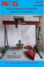

Last update 15-07-25 by BT
NEXT MEETING OF THE CLUB
IS AT BAGINTON ON MARCH 28, 2026
LATEST MMG BULLETIN NOW AVAILABLE TO MEMBERS

A NEW SERIES OF MODEL PLANS
FROM MMG PUBLISHED BY MWMO
SEE MODEL PLANS
REPORTS
Model Reports of MMG Meetings
MEMBERS' MODEL GALLERY
FEATURES
Details of MMG events
LINKS
MEDIA
READ THE COLLECTORS GAZETTE ARTICLE
Click for the article
PUBLICATIONS
"Meccano"
A book authored by the late Roger Marriott available from Bloomsbury Publishing
Explores the long history of Meccano and explains the endless fascination of this iconic construction toy
Click to read a review by Jim Gamble
Click to order a copy
website admin
Publications
MMG MODEL PLANS
This new series of plans is of models developed by members of the Guild and described by Roger Marriott. The commission from these publications go to supporting the continuation of the MMG. SEE "MODEL PLANS"
MIDLANDS MECCANO GUILD BULLETIN
The club publishes a bulletin (MMGB) three times a year in April, August and December. The April and December issues carry the reports of our meetings with a description of all the models shown by members. Photographs of some models are included in the bulletin. Links to pictures of all of the models shown at our meetings are given in the "Gallery". The Bulletin also includes articles on modelling, collecting, and more general areas such as the history of the guild.
BACK COPIES OF SOME BULLETINS ARE AVAILABLE FROM THE SECRETARY AT £3.00 EACH INC POSTAGE
The bulletin includes the model report for the meeting on 12th October, an article by Ann Evans that appeared in the Collectors Gazette, the Secretary AND Treasurers report for 2022/23 and a report of the Midlands Engineering Exhibition.
The bulletin includes an article on the Meccano Mousetrap game, the model report for the meeting AT BRITISH MOTOR MUSEUM on 22&23 July, and an article remembering Geoff Wright.
The bulletin includes an article on the Meccano traction engine, advice on repainting Meccano parts and the model report for the meeting on 25 March 2023.
The bulletin includes building the Krokodil, the model report for the meeting of MMG, the exhibition at the Fosse, the secretary and treasurer report for the past year.
The bulletin includes a report of the exhibition at The British Motor Museum and articles by George Sayell on building SML3, George Illingworth's relationship with the Green Goddess, Robin Schoolar's Green Meanie.

The meeting took place in March and members bought again a spectacular range of models including the Goliath Gantry crane by Tony Horton(seen on the cover) and described in the magazine. As well as the meeting report there are articles by John Hornsby and Roger Marriott.
Our first meeting took place in October and the members brought a spectacular range of models summarised in this bulletin along with articles by George Sayell, Richard Dunster-Sigtermans and Chris Bond and the Secretary & Treasurer report of the club.
There is still lots to read in this issue. An article by George Illingworth entitled 'How Meccano and email shrunk the world'; demonstration gearing by Mike Edkins; A Meccano tractor by John Sharp and the report of the exhibition at BMM.
No meeting took place due to the coronavirus but there is still lots to read in this issue. An article by Tony Homden of the USS Cincinniti; Meccano models of the clockwork Minic range 10M long nosed delivery model by John Rogers; and an article on improving the motorisation of the giant blocksetting crane.
No meeting took place due to the coronavirus but there is still lots to read in this issue. A survey of draglines inspired by the last bulletin, an interesting article on the Clyde Puffer, a rebuild of the 'Little Grey Fergie' and a model of a 1st WW anti-aircraft gun as well as the business report for 2019-20.
No meeting took place due to the coronavirus but there is still lots to read in this issue. A new design of the manual cover dragline shown on the cover of the previous issue and a table footie model by Bob Seaton from SMG plus more on lockdown models.
No meeting took place due to the coronavirus but there is still lots to read in this issue. Includes a report of the London Model engineering exhibition at Ally Pally; updating and computerising the the colliery complex by Paul Merrick; Naval exploits from Tony Homden and useful building tips from a new member.
This issue includes the reports of the AGM and of the models seen at the meeting 12 October; A novel update of mini Fire Engine from our sister club the Sheffield Meccano Guild and a description of Richard Payn's rebuild of the famous Eric Taylor lorry mounted crane. A Pdf version available in the members area.
This issue includes the reports of the exhibitions at Skegness and Gaydon(BMM); how to build a pocket sized Morgan three wheeler, and a further article on computer control. A Pdf version available in the members area.

This issue includes the report of the March meeting; an article on spur gear differentials and a further article on computer control. A Pdf version available in the members area.
This issue includes reports of the October meeting and AGM; a heath Robinson differential analyser created by George Sayell. A Pdf version available in the members area.
This issue includes reports of SkegEx and also the MMG exhibition at the British Motor Museum. Articles on Geoff Burgess's AEC Matador and an introduction to computer control by Paul Merrick. Pdf version available in the members area.
This issue includes the report of the 102st meeting. Articles on a visit to see a remnant of the Hartree differential analyser and computerised control of the Servetti fantasy factory. Pdf version available in the members area.
This issue includes the report of the 101st meeting, the MMEE report and AGM report. Articles on railway signalling, a switching box for control of multiple electrical operations and a small beam engine from the archives. Pdf version available in the members areas
This issue includes the report of our special anniversary meeting including the 50 parts competition,exhibition reports and the final part of Geoff Burgess's Amazon Coles crane. A pdf version is available in the members area.
This issue includes the report of our 100th meeting and how to make a sextopus into an octopus fairground ride. A pdf version is available in the members area.
This issue includes articles by Ken Senar, Geoff Burgess on his Thorneycroft, a novel brake for Terry Allen's Picard racing car and lots more including arrangements for the 50th anniversary. A pdf version is available in the members area.
This issue includes reports of the AGM, model report for the 99th meeting and the MMEE award for the best in show, the details of our 50th anniversary 50 parts competition, and an article on Dinky Builder. A pdf version is available in the members area.
This issue includes reports of Skegness and Gaydon Exhibitions. Building instructions for Mike Hopper's round the pole helicopter and Colin Bull's prize winning Laxey water wheel. A pdf version is available in the members area.
This issue includes the model report for the 98th meeting held in March 2016 and news of our plans for the 50th anniversary of MMG in 2017. A pdf version is available in the members area.
This issue includes the final part of build instructions for Terry Pettitt's Aero Morgan, news of our 50th anniversary and a recreation of a Dinky Toys display model. A pdf version is available in the members area.

This issue includes the model report for our October meeting. The report of the AGM and an interesting "Tale of many clocks". A pdf version is available in the members area.
This issue includes the reports of exhibitions at the Heritage Motor centre and Skegness; completes the review of Geoff Burgess's SCAMMELL and looks forward to our 50th year in 2017.
This issue includes the report of our 96th meeting and continues the building instructions for Terry Pettit's superb Aero Morgan.
This bumper issue begins the building instructions for Terry Pettit's superb Aero Morgan. Contains details of Geoff Burgess's SCAMMELL and much more news from members.
This issue contains the model report for the 95th meeting of the guild and the report of the AGM.
This issue contains the model report for the 33rd Annual Exibition at Skegness.
This issue contains the model report for our 94th meeting on 12 March at Baginton.
The first issue of 2014 promises a good year for Meccano. The front cover shows John Nuttall’s double flyboats (SML33a) which is controlled by an ingenious (mechanical) mechanism described in this edition by Michael Walker. Ken Senar has now hung up his knitting but we begin a series on his 8-needle automatic French Knitting Machine that extends the functionality of the 4-needle version described in the MMGB September supplement. The Chairman describes an iconic biplane and the centre spread shows some impressive models from former years now placed on the web , thanks to Bob Thompson and Ken Wright who took the photographs.
Includes reports of the October AGM and the models shown at meeting. Also an introduction to our new president Geoff Wright.
Includes report of Skegness exhibition.Also inside is a very neat joystick control from Holy Trinity Meccano club and a report on the opening of the Meccano Bridge at Little Lever near Bolton, held over from the last bulletin.
A special supplement to bulletin 55 by Ken Senar on the development of French Knitting Machines.
BACK COPY AVAILABLE AT £2.50 INC POSTAGE
Includes report of the 92nd meeting.Click for photos of the March 2013 meeting .
The first edition of the MMG Bulletin for 2013 promises a good year for Meccano enthusiasts. Michael Walker describes how Meccano is stepping up to the plate to inspire the creation of a full size (ten times Meccano scale) (proper) bridge over the Manchester Bolton & Bury Canal. Tony Brown and John Hornsby provide more information about the Ruston dragline (SML27) that was the basis of Ken Senar’s wonderful model and Ken gives us some more hints from his workbench. Matt Goodman begins a promising series of articles on electrical matters and the editor begins a survey of the history of aviation in Meccano. Happy Meccano reading from the editor.
Includes the report of the AGM (Click report) and the model report of the 91st MMG meeting (More details in Gallery)
This edition includes an article remembering our President, Jack Partridge, who died suddenly in early June 2012. A report of the Skegness exhibition and details of the Adler/Payn TAKRAF crane.
BACK COPY AVAILABLE TO MEMBERS ONLY
A special supplement to bulletin 51 described Ken Senar’s fabulous rebuild of SML 27, pdf version of the supplement can be found in the members area. BACK COPY AVAILABLE AT £2.50 INC POSTAGE
In the JUNE Bulletin from MMG you will find DETAILS of Matthew McCallum's Shop Window Display Click for the link and ONLY TO BE FOUND in the MMG bulletin. Click to read the model report for the March 2012 meeting .
This bulletin includes a description by Brian Compton (a new member) of his superb electronic control system for the Oscar Fontan/Keith Cameron Coal loader/unloader (shown on the cover); more details and constructional techniques used by Ken Senar in his prize winning Wessex HC2 helicopter; a description of Tony Homden’s BMW bomber; a very useful clutch unit by Terry Pettitt and my article on the F Gordon Crosby motor chassis. I hope you enjoy the bulletin. Roger (Hon Secretary/Editor).
In the DECEMBER Bulletin from MMG you will find details of how to build Roger Burton's Helicopter Patrol - ONLY TO BE FOUND in the MMG bulletin. Click to read the model report for the October 2011 meeting.
In the SEPTEMBER Bulletin from MMG you will find a report of members models at SkegEx Click to read the report of MMG models at Skegness. and Ken Senar's wonderful prize winning helicopter described in detail and ONLY TO BE FOUND in the MMG bulletin.
In the June Bulletin from MMG we have an article on an interesting “Bridge Set” by Tony Knowles, inspired by the equally unusual windmill set seen in Bulletin 45. Mike Cook again provides an excellent model report of the March meeting. Click to read the model report for the March2011 meeting. As a special construction project for MMG Michael Whiting, well known as an expert modeller of Orreries has provided details of building one ONLY TO BE FOUND in this edition.
The March edition of the Bulletin includes articles on a very rare and unique 1913 Windmill set by Matthew McCallum, a model of the Chilean mine rescue by Tony Homden, an article recounting the formation of the official Meccano Guild in 1919 and more details of Servetti's trolley factory from Rob Mitchell.
click for a short video of Tony Homden's Chilean mine rescue model
The December issue included the report of the October meeting and an article on the early days of the Midlands Guild by Jim Gamble
Ken Senar's intriguing model of the tracked Australian steel horse is featured in MMGB43 and can be downloaded from the members' area together with the full report of the MMG at Skegness.
MIDLANDS MECCANO GUILD GAZETTE
A larger Gazette is published occasionally with more detailed building constructions for models. The Gazette is free to members and can also be obtained along with other meccano related literature from Meccano Worldwide Mail Order (MWMO website here)